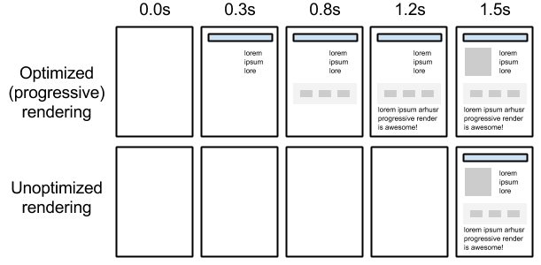

My phone is slow, your website should not
Page load time's worst enemies (average)
- Images
- Scripts
- Videos
- Fonts
- Stylesheets
- HTML
- Other
Fonts Videos Scripts HTML Images Stylesheets Other
Average page size over the years
Total: 785 kB
Total: 2161 kB
 http://www.tomshw.it/news/4g-lte-italiana-al-top-in-europa-ma-non-la-usa-quasi-nessuno-67876
http://www.tomshw.it/news/4g-lte-italiana-al-top-in-europa-ma-non-la-usa-quasi-nessuno-67876
Is it worth caring about performance?
Yes it is!
Every 100ms delay costs Amazon 1% of sales
Make Data Useful
Shopzilla improved load time from 7.5s to 1.2s (avg), increasing revenue of up to 12%
Shopzilla's Site Redo - You Get What You Measure
Making Firefox download page faster by 2.2s increased download conversions by 15.4%
Firefox & Page Load Speed - Part II
Time and user perception
| Delay | User perception |
| 0–100 ms | Instant |
| 100–300 ms | Small perceptible delay |
| 300–1000 ms | Machine is working |
| 1,000+ ms | Likely mental context switch |
| 10,000+ ms | Task is abandoned |
http://chimera.labs.oreilly.com/books/1230000000545/ch10.html#ANATOMY_OF_WEB_APPLICATION
RAIL Performance Model

https://developers.google.com/web/tools/profile-performance/evaluate-performance/rail
RAIL Metrics
- Response: 100ms
- Animation: 16ms
- Idle: max! (main thread JS work divided into 50ms chunks)
- Load: 1000ms
Progressive Rendering
Critical Rendering Path
All that happens in the browser before the page is displayed
Example
<html>
<head>
<link rel="stylesheet" href="style.css">
<title>Example</title>
<head>
<body>
<h1>Hello world!</h1>
</body>
</html>From HTML to DOM

What about CSS? CSSOM!

DOM + CSSOM = Render Tree

HTML and CSS are render blocking
How can we optimise the critical CSS?
- Specify the CSS dependencies as early as possible
- Avoid @imports
- Inline the critical CSS
- Use media types and queries to mark CSS as non-blocking
HTML, CSS... guess who is missing

How can we optimise the critical JS?
- Place script tags in the right position
- Use async scripts if possible
- Defer non-essential and long running code
Resources
- Web Fundamentals
https://developers.google.com/web/fundamentals/performance/critical-rendering-path/ - Udacity: Website Performance Optimization
https://developers.google.com/web/fundamentals/performance/critical-rendering-path/
Thanks!

Reveal.js
The HTML Presentation Framework
Created by Hakim El Hattab / @hakimel
Hello There
reveal.js enables you to create beautiful interactive slide decks using HTML. This presentation will show you examples of what it can do.
Vertical Slides
Slides can be nested inside of each other.
Use the Space key to navigate through all slides.
Basement Level 1
Nested slides are useful for adding additional detail underneath a high level horizontal slide.
Basement Level 2
That's it, time to go back up.
Slides
Not a coder? Not a problem. There's a fully-featured visual editor for authoring these, try it out at http://slides.com.
Point of View
Press ESC to enter the slide overview.
Hold down alt and click on any element to zoom in on it using zoom.js. Alt + click anywhere to zoom back out.
Touch Optimized
Presentations look great on touch devices, like mobile phones and tablets. Simply swipe through your slides.
Fragments
Hit the next arrow...
... to step through ...
... a fragmented slide.
Fragment Styles
There's different types of fragments, like:
grow
shrink
fade-out
current-visible
highlight-red
highlight-blue
Transition Styles
You can select from different transitions, like:
None -
Fade -
Slide -
Convex -
Concave -
Zoom
Themes
reveal.js comes with a few themes built in:
Black (default) -
White -
League -
Sky -
Beige -
Simple
Serif -
Blood -
Night -
Moon -
Solarized
Slide Backgrounds
Set data-background="#dddddd" on a slide to change the background color. All CSS color formats are supported.
Image Backgrounds
<section data-background="image.png">Tiled Backgrounds
<section data-background="image.png" data-background-repeat="repeat" data-background-size="100px">Video Backgrounds
<section data-background-video="video.mp4,video.webm">... and GIFs!
Background Transitions
Different background transitions are available via the backgroundTransition option. This one's called "zoom".
Reveal.configure({ backgroundTransition: 'zoom' })Background Transitions
You can override background transitions per-slide.
<section data-background-transition="zoom">Pretty Code
function linkify( selector ) {
if( supports3DTransforms ) {
var nodes = document.querySelectorAll( selector );
for( var i = 0, len = nodes.length; i < len; i++ ) {
var node = nodes[i];
if( !node.className ) {
node.className += ' roll';
}
}
}
}
Code syntax highlighting courtesy of highlight.js.
Marvelous List
- No order here
- Or here
- Or here
- Or here
Fantastic Ordered List
- One is smaller than...
- Two is smaller than...
- Three!
Tabular Tables
| Item | Value | Quantity |
|---|---|---|
| Apples | $1 | 7 |
| Lemonade | $2 | 18 |
| Bread | $3 | 2 |
Clever Quotes
These guys come in two forms, inline:
“The nice thing about standards is that there are so many to choose from”
and block:
“For years there has been a theory that millions of monkeys typing at random on millions of typewriters would reproduce the entire works of Shakespeare. The Internet has proven this theory to be untrue.”
Intergalactic Interconnections
You can link between slides internally, like this.
Speaker View
There's a speaker view. It includes a timer, preview of the upcoming slide as well as your speaker notes.
Press the S key to try it out.
Export to PDF
Presentations can be exported to PDF, here's an example:
Global State
Set data-state="something" on a slide and "something"
will be added as a class to the document element when the slide is open. This lets you
apply broader style changes, like switching the page background.
State Events
Additionally custom events can be triggered on a per slide basis by binding to the data-state name.
Reveal.addEventListener( 'customevent', function() {
console.log( '"customevent" has fired' );
} );
Take a Moment
Press B or . on your keyboard to pause the presentation. This is helpful when you're on stage and want to take distracting slides off the screen.
Much more
- Right-to-left support
- Extensive JavaScript API
- Auto-progression
- Parallax backgrounds
- Custom keyboard bindings